Steady: buying crypto for the first time
More money apps now offer crypto, and most of their customers have never bought any. I designed the first purchase for that person: someone who checks their balance before payday and wants to try $25 of Bitcoin without feeling tricked.
- Type
- Concept, 2026
- Platform
- iOS, mobile first
- My role
- Everything: flows, UI, prototype, Figma system
- Scope
- 16 screens, 2 flows, 56 prototype links
The problem
Crypto apps tend to design the first purchase for people who already know what a spread or a network fee is. An everyday money app can't. Its customers are careful with money, and a bad first experience costs trust in the whole account, not just the crypto tab.
I've worked on crypto products since I started Token Labs in 2014. I designed around four worries I expect a first-time buyer to have:
- Losing money. Prices move, and nobody explains how much.
- Hidden costs. The fee shows up after you've committed.
- Getting stuck. Not knowing if or when the money can come back out.
- Scams. Once coins leave the app, a mistake can't be undone.
These are design assumptions, not research findings. The last section says how I'd test them.
Goals
Make the first buy quick
Preset amounts and a short path from Home make it easy to try.
Show the full cost up front
The price, the fee and the total are shown in dollars before Face ID, and they don't change while you decide.
Make it clear how to sell
Selling back to Checking is explained before the first buy, so nobody has to figure it out later.
Protect people sending crypto out
When people move crypto to their own wallet, the app protects them from the most common way it gets lost.
Key decisions
Crypto is one tile on Home
It sits next to everything else in the account, and the tile shows the smallest amount you can buy, because cost is the first thing people worry about.
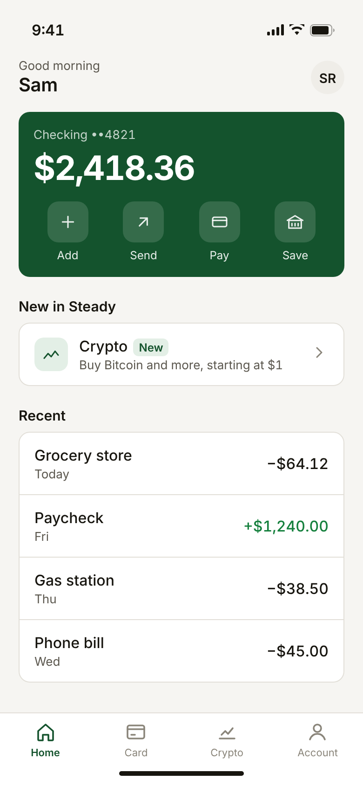
One screen of plain facts before the first buy
Before the first buy, one screen covers the four worries in plain words. "Prices move a lot" comes first, not last. The disclosure sits right next to the button instead of behind a link. After the first purchase this screen never appears again.
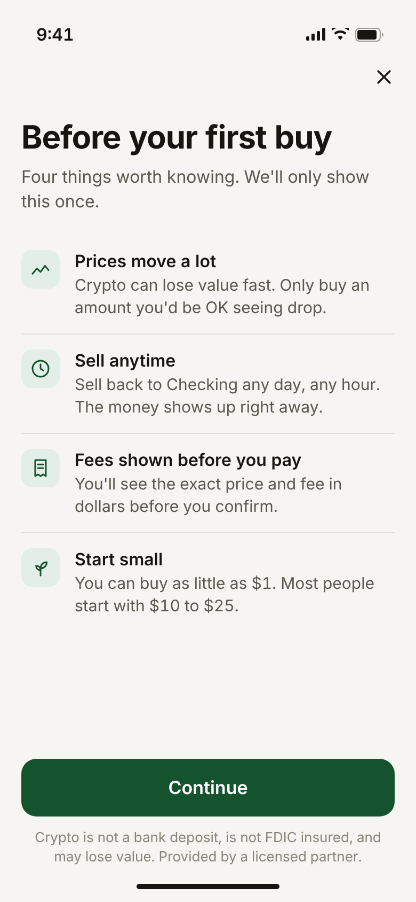
Amounts in dollars, and only three coins to choose from
People think in what they spend, so the dollar amount is big and the coin amount is the secondary line. Preset chips cover most first purchases. The asset list stops at three, and the stablecoin gets one line of explanation because "USDC" means nothing to a first-time buyer.
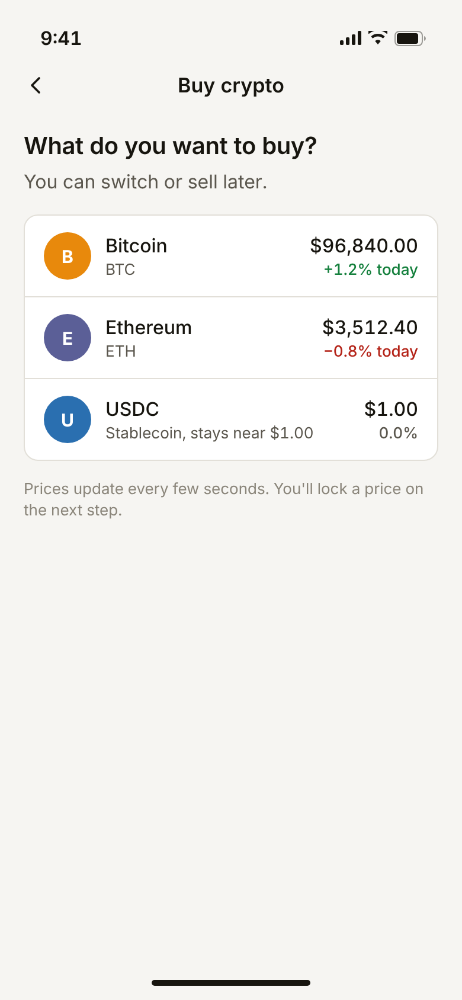
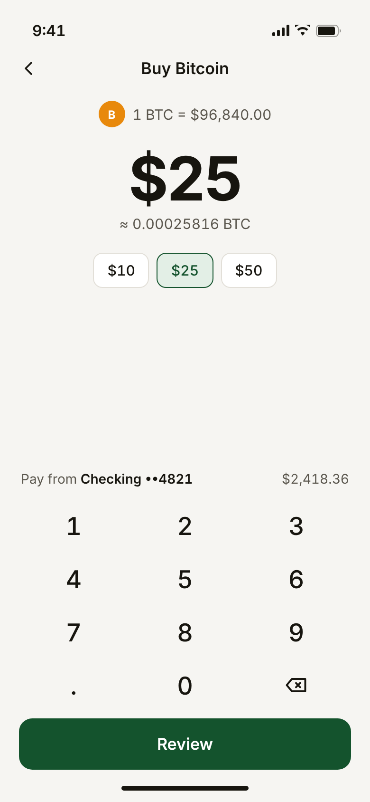
Catching a low balance while you type
If the amount plus the fee is more than the Checking balance, the number turns red as you type and the button changes to move the difference from Savings. That way nobody taps Review only to be told no.
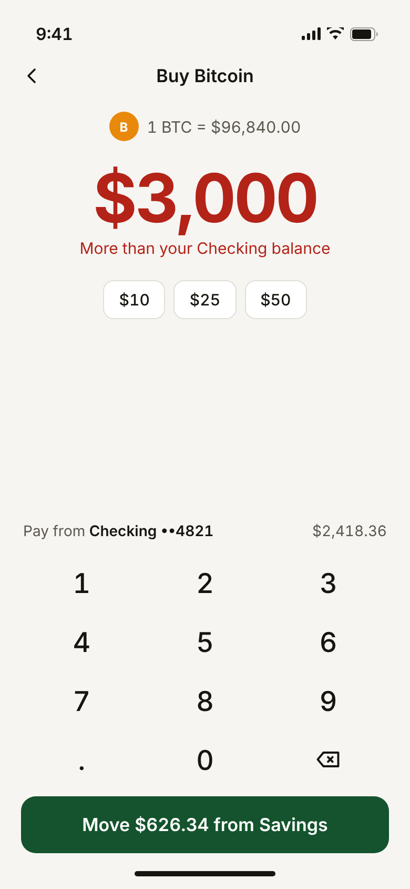
Holding the price, and showing the fee before Face ID
The quote is held for 30 seconds with a visible countdown, so the number you agree to is the number you pay. The fee is shown in dollars and as a percent. The Face ID sheet repeats the total, so the last thing you see before paying is what you pay.
There's also an optional monthly limit, on by default for a first purchase. It's a small, visible way of saying the app isn't trying to get you to buy more.
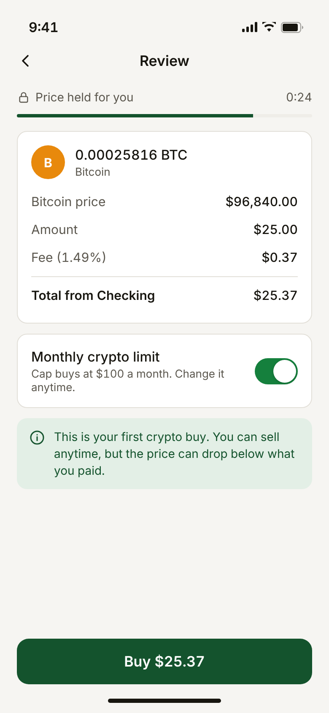
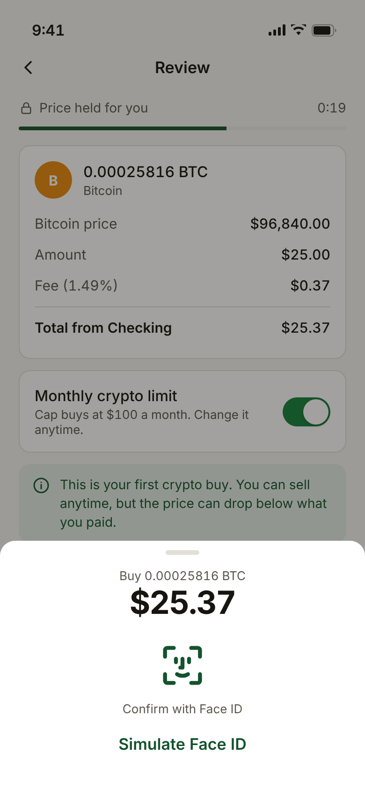
When the price hold runs out
If you wait too long, the screen says the hold ended, shows the new price and what it does to your order in dollars, and confirms nothing was charged. One button gets a fresh price.
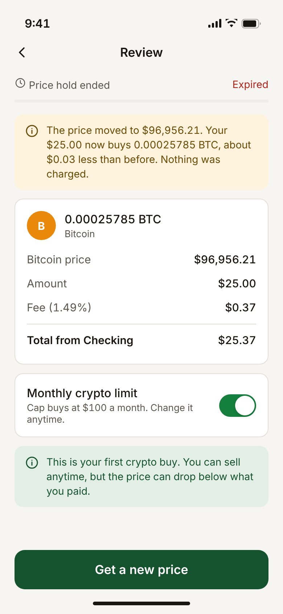
Showing gain or loss against what you paid
Most crypto screens lead with the 24-hour change. A first-time owner wants to know one thing: am I up or down? So the headline compares today's value with what you paid, fee included, and the chart marks your purchase price.
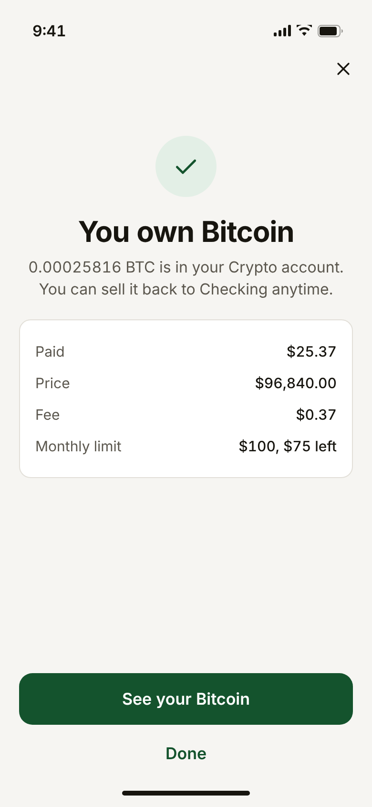
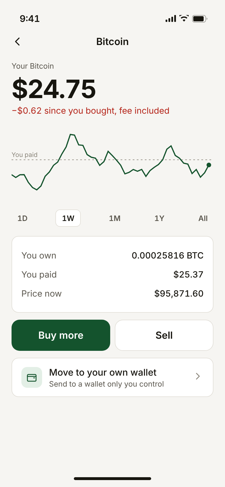
Checking pasted addresses
Address poisoning is a common scam: someone sends a tiny deposit from an address that starts and ends like one you use, hoping you'll copy it from your history later. Steady compares every pasted address with your saved ones. If it's a near match, it says so, marks exactly which characters differ, and offers your saved wallet as the main action.
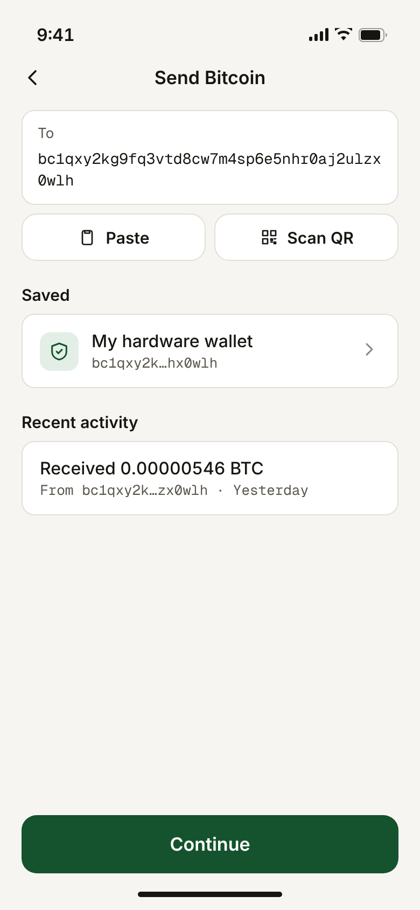
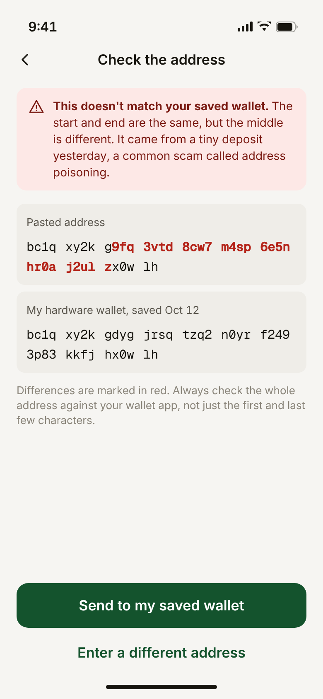
A $1 test before the first real send
Crypto sends can't be reversed. The first time you send to an address, Steady suggests sending $1, checking it arrived, and then sending the rest, with a reminder. The confirmation says how long it should take, so people know how long to wait.
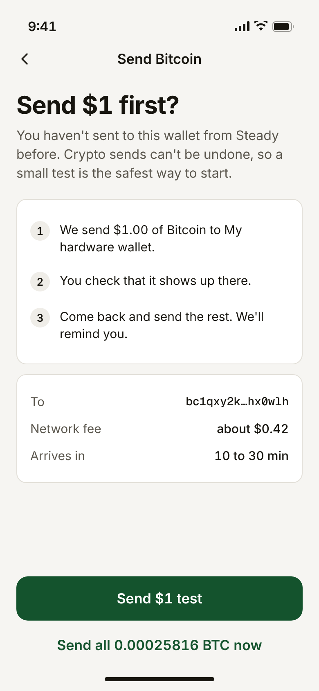
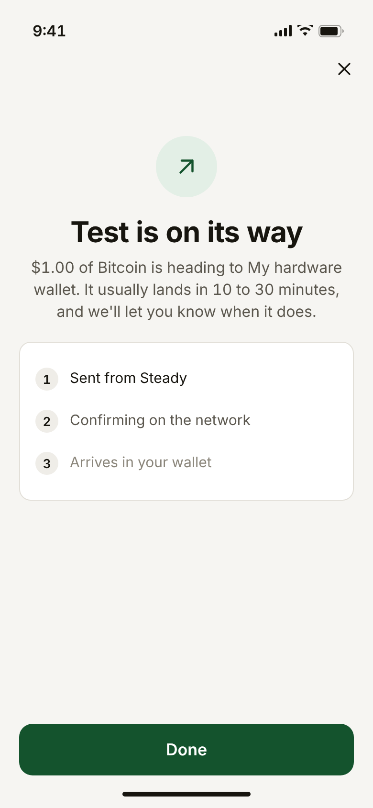
Try it
Every button works. On a phone it fills the screen.
The Figma file
The Figma file has every screen as editable layers, wired up as a clickable prototype, and built on a small design system:
- Color variables for surfaces, text, brand, status and assets, so a dark mode is one new mode away.
- Text styles from display amounts down to captions.
- Components with variants: Button (style and state), Chip (selected), Keypad key, status bar, tab bar and home indicator.
- Two flows in sections, with notes on each screen explaining the decisions.
How I worked
I used AI tools to move faster without giving up control of the decisions. I wrote the flows, rules and copy, then used an AI coding assistant to turn them into a working prototype I could click through and adjust in minutes. A small Figma plugin builds the Figma file straight from the prototype, so the two never drift apart.
Working this way made it easy to explore edge cases. The expired price hold, the over-balance amount and the look-alike address each started as a "what if" and became a screen the same day.
What I'd test next
- Five moderated sessions with people who have never bought crypto. Can they buy $25 without help, and afterwards say what the fee was?
- Whether the monthly limit default feels protective or patronizing.
- Whether people read the address warning, or need a deliberate extra step to continue past it.
- In production: first-purchase completion, drop-off on Review, and how often the price hold expires.
Steady is a concept I made in 2026. It isn't affiliated with any company, and prices, balances and addresses are examples.